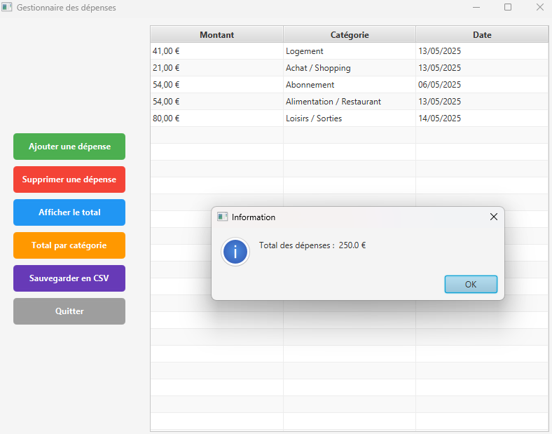
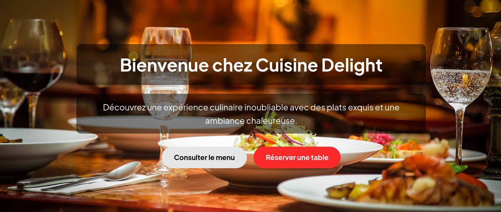
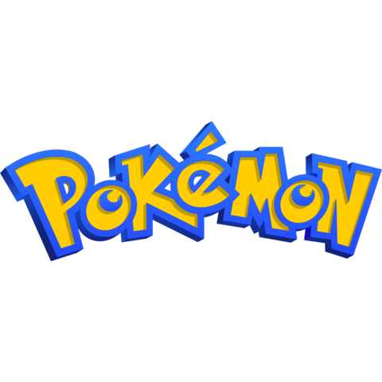
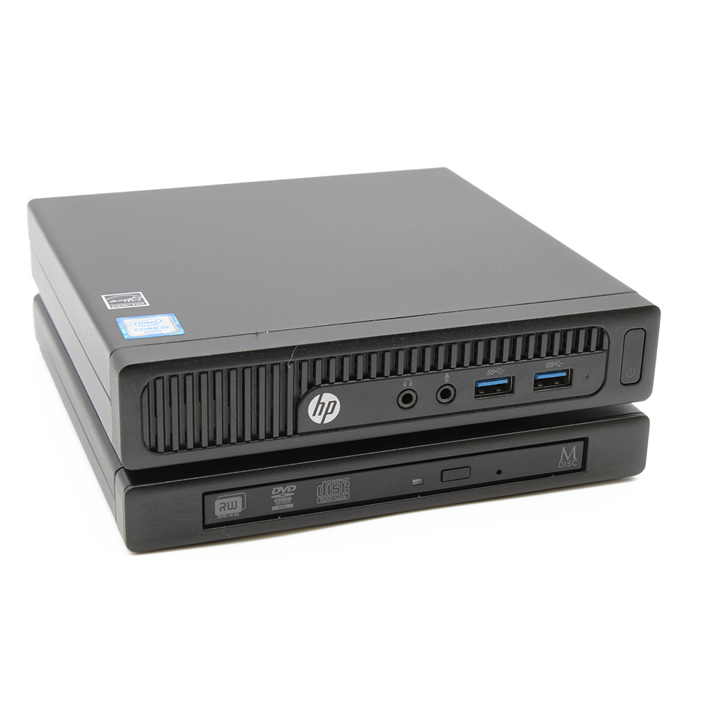
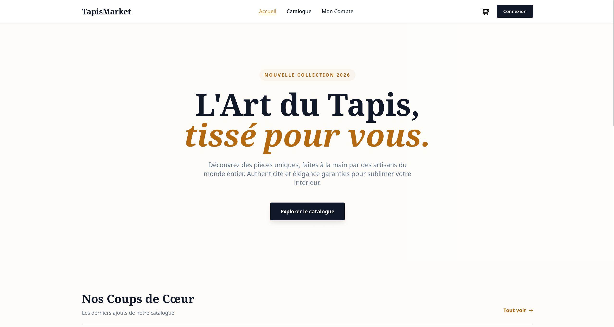
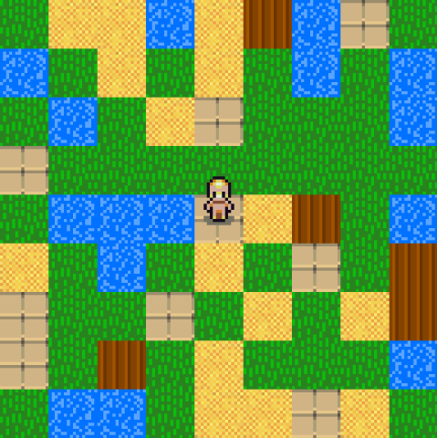
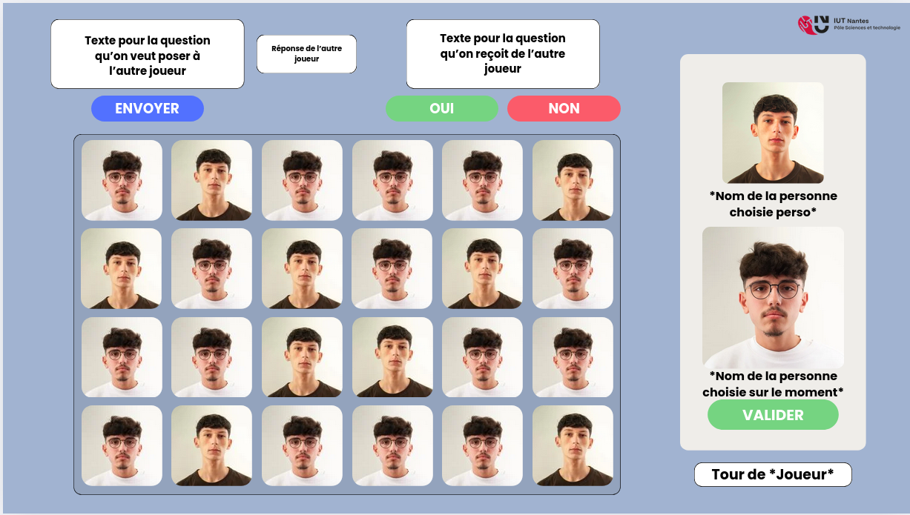

Mes Projets
Une présentation de mon travail en développement logiciel, avec des projets qui mettent en valeur mes compétences et ma passion pour le code.
Projets Personnels

Application de suivi des dépenses
Application desktop pour ajouter et supprimer des dépenses par catégorie, avec une interface graphique JavaFX. Disponible uniquement sur PC.

Site web de faux restaurant
Site vitrine pour un restaurant fictif avec présentation du menu, des plats et un design responsive. Déployé sur Netlify.

Jeu Pokémon en CLI
Jeu Pokémon en ligne de commande avec combats au tour par tour, 151 Pokémon importés depuis PokéAPI, sauvegarde de partie et système de types complet.

HomeLab
Infrastructure personnelle auto-hébergée : hyperviseur Proxmox, pare-feu OPNsense et sept services isolés en conteneurs LXC, reliés via Tailscale.
Projets Universitaires

Site Web e-commerce (TapisMarket)
Marketplace e-commerce développée en groupe de 5 avec gestion des comptes, catalogue produits, panier et commandes. Déployé sur Railway.

Jeu en Quadtree
Jeu 2D en Go développé en binôme où le joueur se déplace sur une map générée via une structure de données quadtree.

Jeu Qui-Est-Ce ?
Recréation du jeu de société Qui-Est-Ce ? en Kotlin/JavaFX, développé en groupe de 4 dans le cadre d'une SAE universitaire. Projet inachevé.